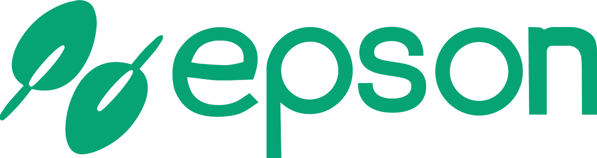
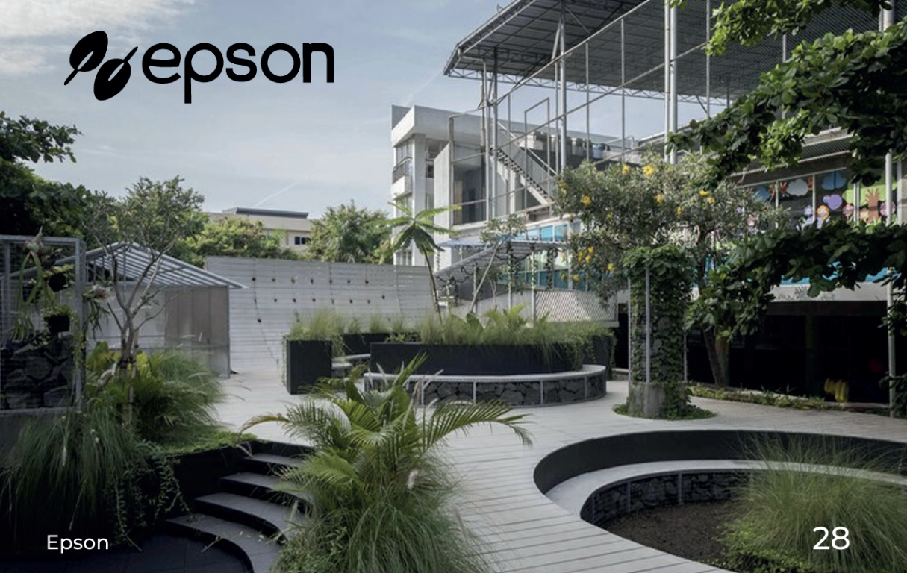

A nova Epson une precisão e responsabilidade ecológica. Transformando inteligência técnica em força regenerativa, criamos soluções eficientes para devolver recursos à própria Terra.
Inovação que renova, tecnologia precisa e um futuro sustentável. Buscamos transformar operações com eficiência ecológica, sem abrir mão da alta performance, reduzindo o consumo de energia e de recursos.
O novo logotipo, com folhas minimalistas, está disposto de forma fluida, evocando o conceito de economia circular e o ciclo regenerativo da natureza. O traço minimalista e limpo traduz na criação de produtos menos poluentes, refletindo a máxima eficiência ecológica.
O DNA da marca consiste na junção dos atributos em forma de um conceito.
Nossa marca busca ser clara e firme na comercialização e na comunicação com o público e, ao mesmo tempo, respeitosa, mantendo um discurso direto e expressando nossas opiniões quando necessário.
Como sugere o significado da palavra, nossa empresa é meticulosa nas tarefas e responsável, evitando desleixo com nossos clientes e agindo com honestidade, ética e cuidado, principalmente com o meio ambiente.
O termo humanitário se refere a princípios ou ações que aliviam o sofrimento humano e promovem o bem-estar. A Epson busca contribuir para o bem-estar ecológico, evitando o desmatamento e diminuindo o sofrimento humano.

imagens retiradas das aplicações do miv epson.